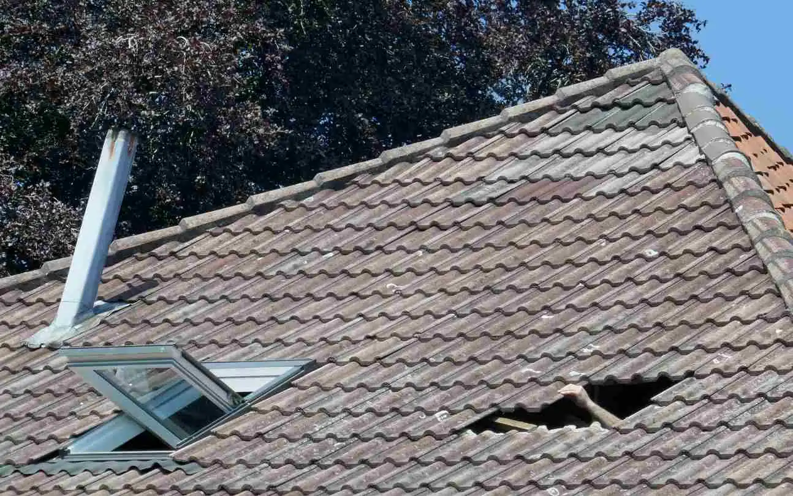

Swamp coolers are quite popular in Utah due to the dry and hot climate. But, more and more people are ditching their old swamp coolers in favor of A/C units here in Utah.
Many people think it’s faster and cheaper to do it themselves, but it can be a real pain to remove a swamp cooler.
Without the proper technique, you can seriously damage your roof. Even if you remove it correctly, you will still need to repair your roof afterward.
While we can’t stop you from trying to DIY your swamp cooler removal, we’d love to save you a headache and remove it for you. We’ll then help take care of the hole left behind by the removal.
If you get in over your head, you can always call American Roofing, one of Utah’s most trusted roof repair companies, for professional removal and roof repair on your home, apartment, condo, or any other residence.
What to Know Before You Start a Swamp Cooler Removal
Removing a swamp cooler can be dangerous because it involves climbing onto your roof and removing heavy equipment.
Here are some things you should be aware of before attempting removal:
- You will need to drain the swamp cooler before removing it.
- To avoid electrocution, you will need to shut off the power to your roof before commencing uninstallation.
- You’ll need a ladder to get up onto your roof.
- You risk injuring yourself when you are up on the roof.
- You’ll most likely need at least one other person to help you.
- Swamp coolers are heavy, ranging from 78lbs to more than 150 lbs.
- You’ll have to carefully lower the swamp cooler off of the roof and onto the ground.
Steps to Follow When Removing a Swamp Cooler
Every swamp cooler is different, as is each roof. You’ll need to adapt these instructions to your situation, taking extreme care not to damage your roof or injure yourself.
How to Remove Your Swamp Cooler:
- Shut off all power to the roof.
- Drain the swamp cooler.
- Remove side panels on the swamp cooler
- Carefully lower side panels to the ground
- Remove screws fastening the swamp cooler to the plenum
- Cut or remove glue connecting the swamp cooler to the plenum
- In some cases, a panel may be glued to the swamp cooler and the roof. Carefully cut this away, taking care not to cut or damage roof shingles
- Disconnect electrical wires. Be careful to avoid electrocution.
- Carefully lift the swamp cooler up and off of the plenum, ensuring that the electrical wires are free from the swamp cooler.
- Lower the swamp cooler off of the roof and onto the ground
How to Fix a Swamp Cooler Hole in Roof
Now that your swamp cooler is gone, you’ll notice that you have a gaping hole in your roof. You’ll also have to remove the plenum, which was probably screwed and glued onto your roof.
Just taking out your swamp cooler still leaves you with a fair amount of problems. In order to avoid damaging your roof and home, you’ll want to cover the open hole to ensure that no water gets in. Then contact a professional roofing company right away.
To deal with the hole, you have a few options: 
- Patch the hole and replace the shingles
- Have a skylight put in
- Install an attic fan
Patching the hole and replacing the shingles is the most common and most cost-effective solution. American Roofing can help you to choose the best option for your roof and home.
Common Swamp Cooler Questions
Will a Swamp Cooler Ruin Electronics?
A swamp cooler increases the humidity in your home, but so long as the humidity stays below the dew point, your electronics should be fine.
Are Swamp Cooler Belts Universal?
While not wholly universal, most swamp coolers will be able to work with almost any belt.
Is It OK to Leave a Swamp Cooler on All Night?
It’s best not to leave your swamp cooler on all night. Leaving it on all night can oversaturate your home with humidity and wear out the cooler.
Get Help from American Roofing
If we haven’t already made it clear, we don’t recommend removing your swamp cooler by yourself. Replacing a swamp cooler often leads to additional roofing repair needs. It’s also dangerous and better handled by professionals.
Though it might seem cheaper to do it yourself, the costs that could come from damaging your roof, falling off of the roof, or being electrocuted could be a painful long-term mistake.
Contact us today for a free quote on a roof repair. We have been working on Utah roofs for over 60 years and can provide the help you need.